2024 Advanced Higher Physics questions
Source: Scottish Qualifications Authority (SQA) / Qualifications Scotland. This is a StemInteract HTML companion, not an official HTML edition. Selectable text is supplied alongside original page images. Use the images or original PDF for equations, powers, fractions, vector notation, tables and diagrams; text extraction cannot fully preserve mathematical layout.
Jump to a question
PDF page 1
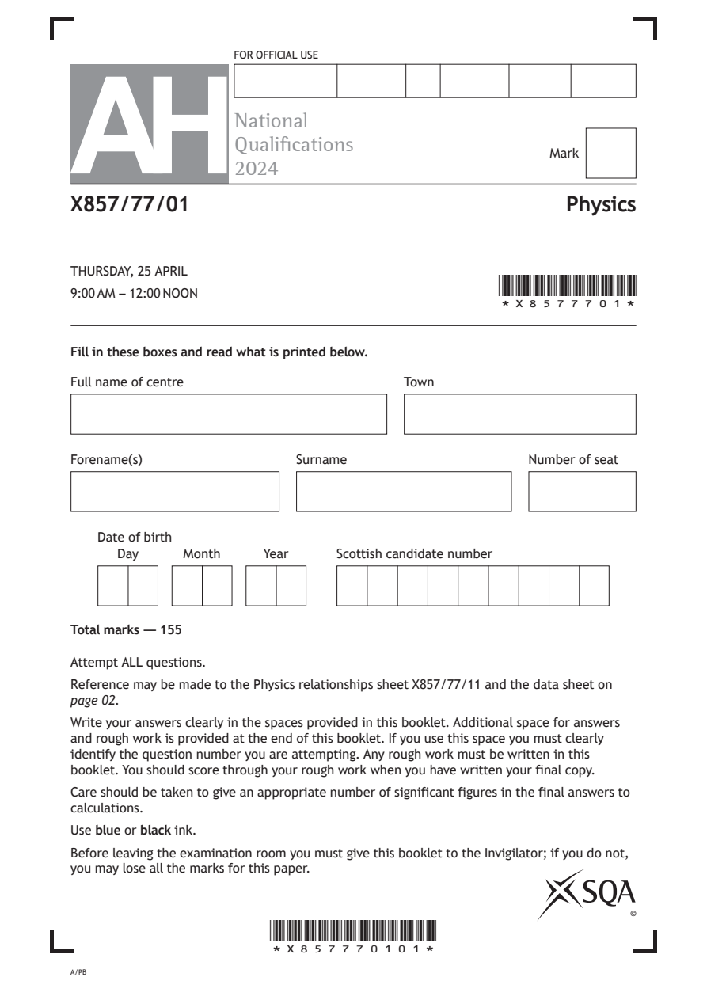
Selectable page text
FOR OFFICIAL USE
AH
National
Qualications
Mark
2024
X857/77/01 Physics
THURSDAY, 25 APRIL
9:00 AM – 12:00 NOON
*X8577701*
Fill in these boxes and read what is printed below.
Full name of centre Town
Forename(s) Surname Number of seat
Date of birth
Day Month Year Scottish candidate number
Total marks — 155
Attempt ALL questions.
Reference may be made to the Physics relationships sheet X857/77/11 and the data sheet on
page 02.
Write your answers clearly in the spaces provided in this booklet. Additional space for answers
and rough work is provided at the end of this booklet. If you use this space you must clearly
identify the question number you are attempting. Any rough work must be written in this
booklet. You should score through your rough work when you have written your final copy.
Care should be taken to give an appropriate number of significant figures in the final answers to
calculations.
Use blue or black ink.
Before leaving the examination room you must give this booklet to the Invigilator; if you do not,
you may lose all the marks for this paper.
©
*X857770101*
A/PBPDF page 2
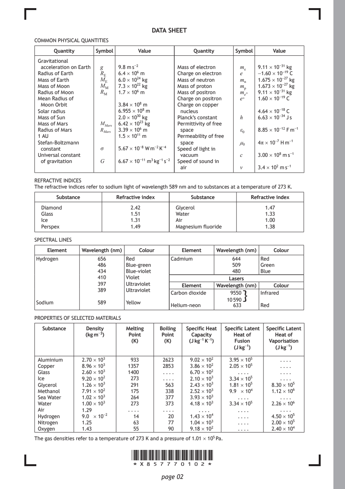
Selectable page text
DATA SHEET
COMMON PHYSICAL QUANTITIES
Quantity Symbol Value Quantity Symbol Value
Gravitational
acceleration on Earth g 9.8 m s⁻² Mass of electron mₑ 9.11 × 10⁻³¹ kg
Radius of Earth R_{E} 6.4 × 10⁶ m Charge on electron e −1.60 × 10⁻¹⁹ C
Mass of Earth M_{E} 6.0 × 10²⁴ kg Mass of neutron mₙ 1.675 × 10⁻²⁷ kg
Mass of Moon M_{M} 7.3 × 10²² kg Mass of proton mₚ 1.673 × 10⁻²⁷ kg
Radius of Moon R_{M} 1.7 × 10⁶ m Mass of positron mₑ⁺ 9.11 × 10⁻³¹ kg
Mean Radius of Charge on positron e⁺ 1.60 × 10⁻¹⁹ C
Moon Orbit 3.84 × 10⁸ m Charge on copper
Solar radius 6.955 × 10⁸ m nucleus 4.64 × 10⁻¹⁸ C
Mass of Sun 2.0 × 10³⁰ kg Planck’s constant h 6.63 × 10⁻³⁴ J s
Mass of Mars M_{M}ₐᵣₛ 6.42 × 10²³ kg Permittivity of free
Radius of Mars R_{M}ₐᵣₛ 3.39 × 10⁶ m space ε₀ 8.85 × 10⁻¹² F m⁻¹
1 AU 1.5 × 10¹¹ m Permeability of free
Stefan-Boltzmann space μ₀ 4π × 10⁻⁷ H m⁻¹
constant σ 5.67 × 10⁻⁸ W m⁻² K⁻⁴ Speed of light in
Universal constant vacuum c 3.00 × 10⁸ m s⁻¹
of gravitation G 6.67 × 10⁻¹¹ m³ kg⁻¹ s⁻² Speed of sound in
air v 3.4 × 10² m s⁻¹
REFRACTIVE INDICES
The refractive indices refer to sodium light of wavelength 589 nm and to substances at a temperature of 273 K.
Substance Refractive index Substance Refractive index
Diamond 2.42 Glycerol 1.47
Glass 1.51 Water 1.33
Ice 1.31 Air 1.00
Perspex 1.49 Magnesium fluoride 1.38
SPECTRAL LINES
Element Wavelength (nm) Colour Element Wavelength (nm) Colour
Hydrogen 656 Red Cadmium 644 Red
486 Blue-green 509 Green
434 Blue-violet 480 Blue
410 Violet Lasers
397 Ultraviolet
Element Wavelength (nm) Colour
389 Ultraviolet
Carbon dioxide 9550} Infrared
10 590
Sodium 589 Yellow
Helium-neon 633 Red
PROPERTIES OF SELECTED MATERIALS
Substance Density Melting Boiling Specific Heat Specific Latent Specific Latent
(kg m⁻³) Point Point Capacity Heat of Heat of
(K) (K) (J kg⁻¹ K⁻¹) Fusion Vaporisation
(J kg⁻¹) (J kg⁻¹)
Aluminium 2.70 × 10³ 933 2623 9.02 × 10² 3.95 × 10⁵ . . . .
Copper 8.96 × 10³ 1357 2853 3.86 × 10² 2.05 × 10⁵ . . . .
Glass 2.60 × 10³ 1400 . . . . 6.70 × 10² . . . . . . . .
Ice 9.20 × 10² 273 . . . . 2.10 × 10³ 3.34 × 10⁵ . . . .
Glycerol 1.26 × 10³ 291 563 2.43 × 10³ 1.81 × 10⁵ 8.30 × 10⁵
Methanol 7.91 × 10² 175 338 2.52 × 10³ 9.9 × 10⁴ 1.12 × 10⁶
Sea Water 1.02 × 10³ 264 377 3.93 × 10³ . . . . . . . .
Water 1.00 × 10³ 273 373 4.18 × 10³ 3.34 × 10⁵ 2.26 × 10⁶
Air 1.29 . . . . . . . . . . . . . . . . . . . .
Hydrogen 9.0 × 10⁻² 14 20 1.43 × 10⁴ . . . . 4.50 × 10⁵
Nitrogen 1.25 63 77 1.04 × 10³ . . . . 2.00 × 10⁵
Oxygen 1.43 55 90 9.18 × 10² . . . . 2.40 × 10⁴
The gas densities refer to a temperature of 273 K and a pressure of 1.01 × 10⁵ Pa.
*X857770102*
page 02PDF page 3
Question 1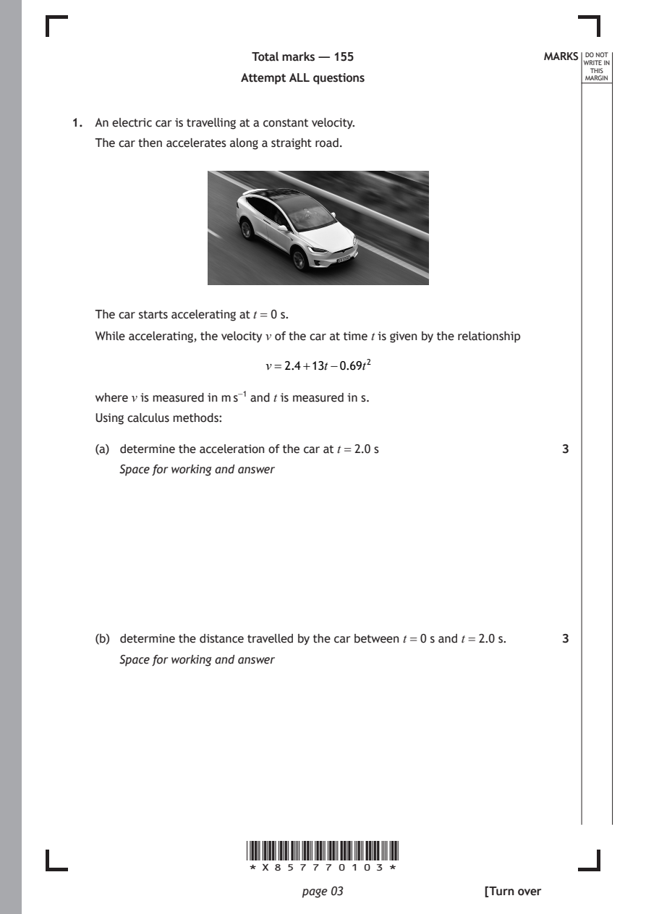
Selectable page text
Total marks — 155 MARKS _{W}^{D}_{R}^{O}_{I} _{T}^{N}OT
E IN
THIS
Attempt ALL questions MARGIN
1. An electric car is travelling at a constant velocity.
The car then accelerates along a straight road.
The car starts accelerating at t = 0 s.
While accelerating, the velocity v of the car at time t is given by the relationship
v=2.4+13t−0.69t²
where v is measured in m s⁻¹ and t is measured in s.
Using calculus methods:
(a) determine the acceleration of the car at t = 2.0 s 3
Space for working and answer
(b) determine the distance travelled by the car between t = 0 s and t = 2.0 s. 3
Space for working and answer
*X857770103*
page 03 [Turn overPDF page 4
Selectable page text
[BLANK PAGE]
DO NOT WRITE ON THIS PAGE
*X857770104*
page 04PDF page 5
Question 2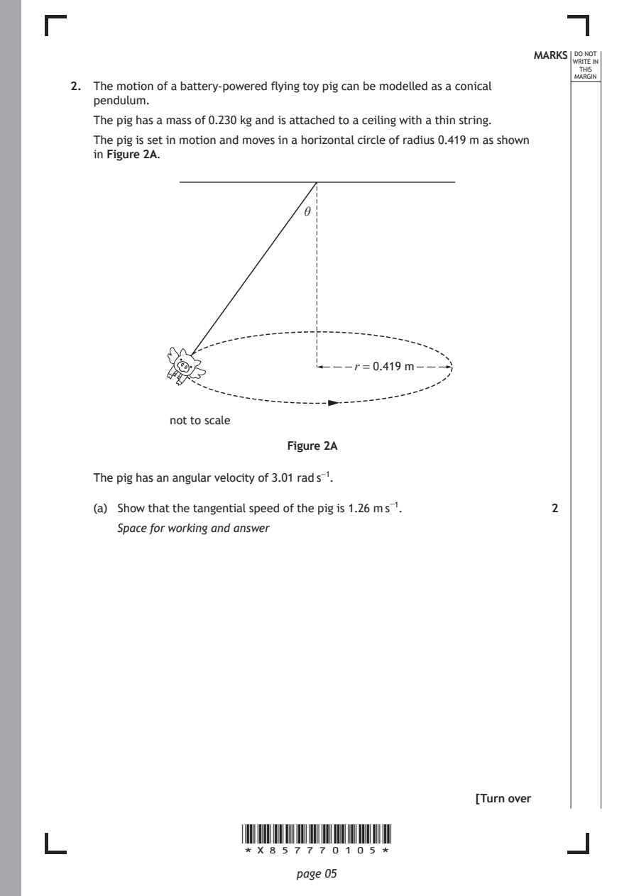
Selectable page text
MARKS _{W}^{D}_{R}^{O}_{I} _{T}^{N}OT
E IN
THIS
MARGIN
2. The motion of a battery-powered flying toy pig can be modelled as a conical
pendulum.
The pig has a mass of 0.230 kg and is attached to a ceiling with a thin string.
The pig is set in motion and moves in a horizontal circle of radius 0.419 m as shown
in Figure 2A.
θ
r = 0.419 m
not to scale
Figure 2A
The pig has an angular velocity of 3.01 rad s⁻¹.
(a) Show that the tangential speed of the pig is 1.26 m s⁻¹. 2
Space for working and answer
[Turn over
*X857770105*
page 05PDF page 6
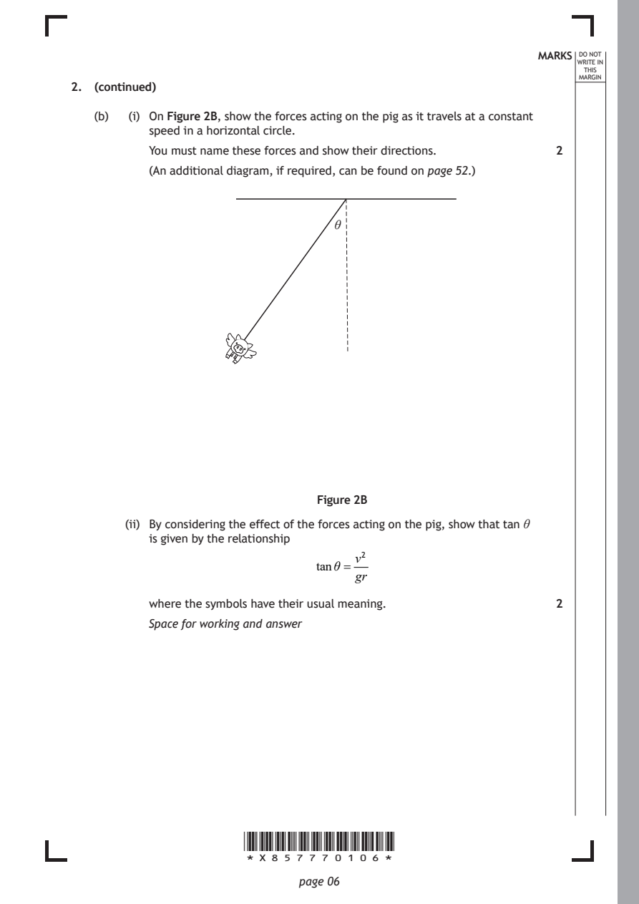
Selectable page text
MARKS _{W}^{D}_{R}^{O}_{I} _{T}^{N}OT
E IN
THIS
MARGIN
2. (continued)
(b) (i) On Figure 2B, show the forces acting on the pig as it travels at a constant
speed in a horizontal circle.
You must name these forces and show their directions. 2
(An additional diagram, if required, can be found on page 52.)
θ
Figure 2B
(ii) By considering the effect of the forces acting on the pig, show that tan θ
is given by the relationship
v²
tanθ =
gr
where the symbols have their usual meaning. 2
Space for working and answer
*X857770106*
page 06PDF page 7
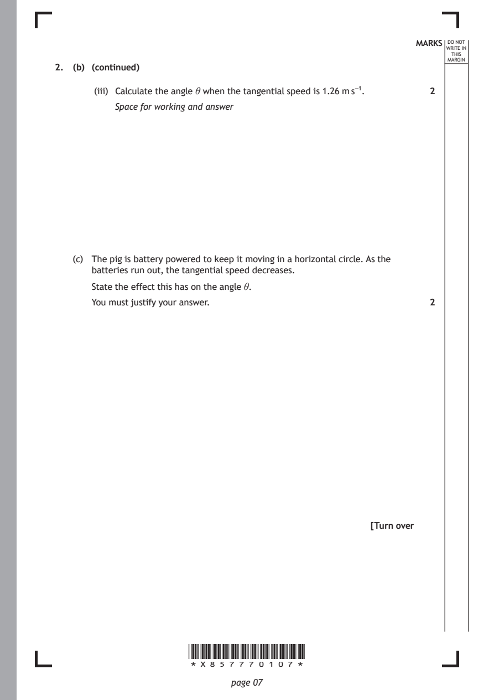
Selectable page text
MARKS _{W}^{D}_{R}^{O}_{I} _{T}^{N}OT
E IN
THIS
MARGIN
2. (b) (continued)
(iii) Calculate the angle θ when the tangential speed is 1.26 m s⁻¹. 2
Space for working and answer
(c) The pig is battery powered to keep it moving in a horizontal circle. As the
batteries run out, the tangential speed decreases.
State the effect this has on the angle θ.
You must justify your answer. 2
[Turn over
*X857770107*
page 07PDF page 8
Question 3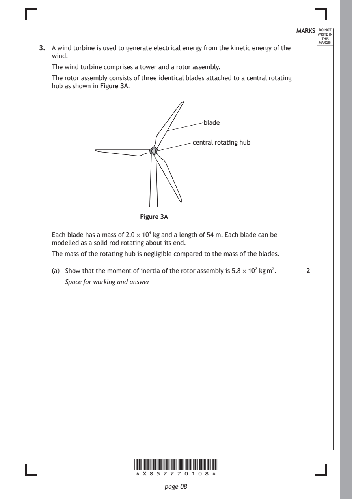
Selectable page text
MARKS _{W}^{D}_{R}^{O}_{I} _{T}^{N}OT
E IN
THIS
MARGIN
3. A wind turbine is used to generate electrical energy from the kinetic energy of the
wind.
The wind turbine comprises a tower and a rotor assembly.
The rotor assembly consists of three identical blades attached to a central rotating
hub as shown in Figure 3A.
blade
central rotating hub
Figure 3A
Each blade has a mass of 2.0 × 10⁴ kg and a length of 54 m. Each blade can be
modelled as a solid rod rotating about its end.
The mass of the rotating hub is negligible compared to the mass of the blades.
(a) Show that the moment of inertia of the rotor assembly is 5.8 × 10⁷ kg m². 2
Space for working and answer
*X857770108*
page 08PDF page 9
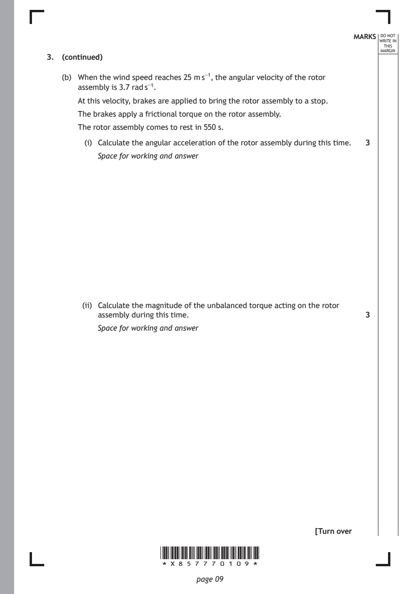
Selectable page text
MARKS _{W}^{D}_{R}^{O}_{I} _{T}^{N}OT
E IN
THIS
MARGIN
3. (continued)
(b) When the wind speed reaches 25 m s⁻¹, the angular velocity of the rotor
assembly is 3.7 rad s⁻¹.
At this velocity, brakes are applied to bring the rotor assembly to a stop.
The brakes apply a frictional torque on the rotor assembly.
The rotor assembly comes to rest in 550 s.
(i) Calculate the angular acceleration of the rotor assembly during this time. 3
Space for working and answer
(ii) Calculate the magnitude of the unbalanced torque acting on the rotor
assembly during this time. 3
Space for working and answer
[Turn over
*X857770109*
page 09PDF page 10
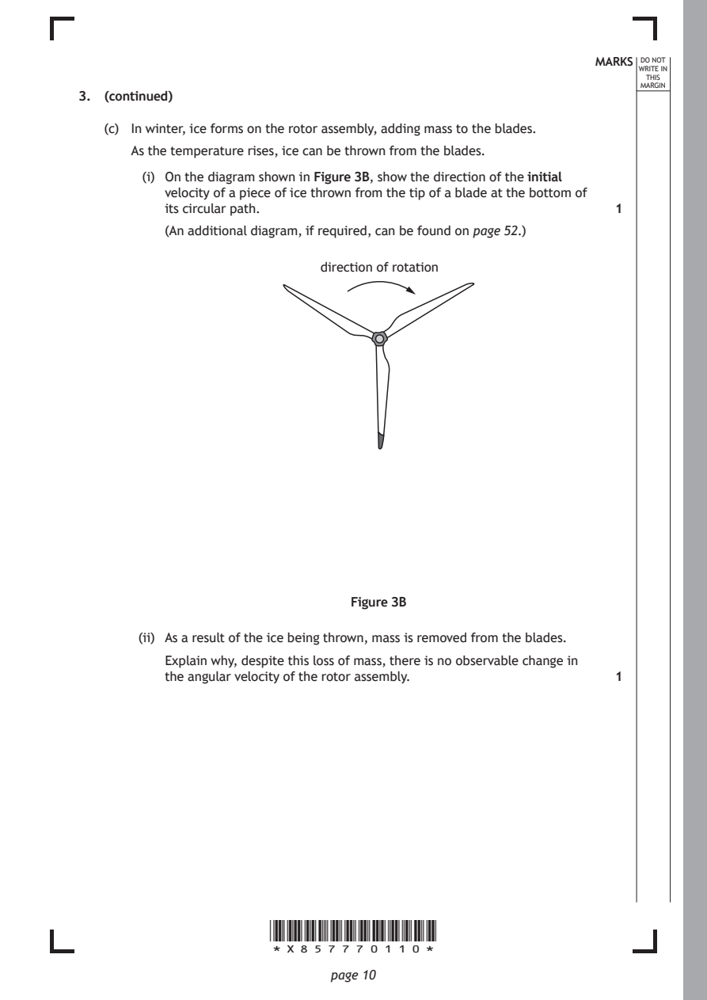
Selectable page text
MARKS _{W}^{D}_{R}^{O}_{I} _{T}^{N}OT
E IN
THIS
MARGIN
3. (continued)
(c) In winter, ice forms on the rotor assembly, adding mass to the blades.
As the temperature rises, ice can be thrown from the blades.
(i) On the diagram shown in Figure 3B, show the direction of the initial
velocity of a piece of ice thrown from the tip of a blade at the bottom of
its circular path. 1
(An additional diagram, if required, can be found on page 52.)
direction of rotation
Figure 3B
(ii) As a result of the ice being thrown, mass is removed from the blades.
Explain why, despite this loss of mass, there is no observable change in
the angular velocity of the rotor assembly. 1
*X857770110*
page 10PDF page 11
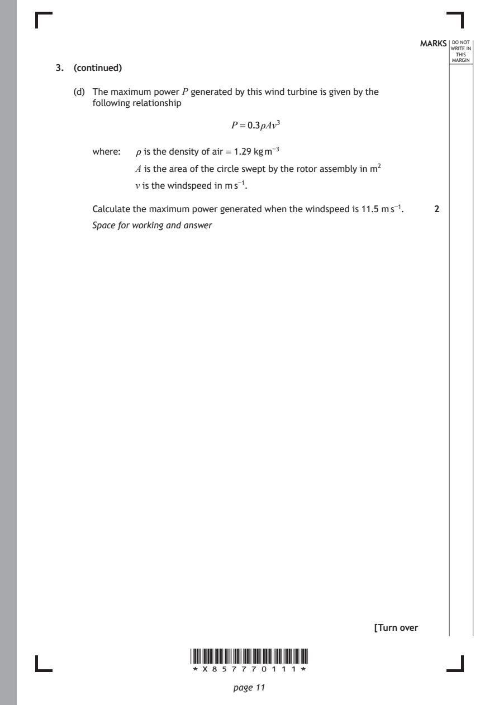
Selectable page text
MARKS _{W}^{D}_{R}^{O}_{I} _{T}^{N}OT
E IN
THIS
MARGIN
3. (continued)
(d) The maximum power P generated by this wind turbine is given by the
following relationship
P=0.3ρAv³
where: ρ is the density of air = 1.29 kg m⁻³
A is the area of the circle swept by the rotor assembly in m²
v is the windspeed in m s⁻¹.
Calculate the maximum power generated when the windspeed is 11.5 m s⁻¹. 2
Space for working and answer
[Turn over
*X857770111*
page 11PDF page 12
Question 4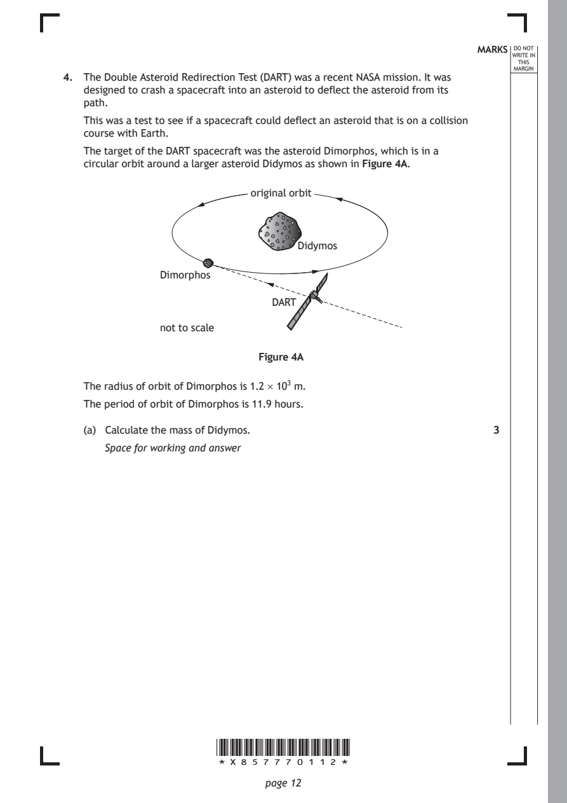
Selectable page text
MARKS _{W}^{D}_{R}^{O}_{I} _{T}^{N}OT
E IN
THIS
MARGIN
4. The Double Asteroid Redirection Test (DART) was a recent NASA mission. It was
designed to crash a spacecraft into an asteroid to deflect the asteroid from its
path.
This was a test to see if a spacecraft could deflect an asteroid that is on a collision
course with Earth.
The target of the DART spacecraft was the asteroid Dimorphos, which is in a
circular orbit around a larger asteroid Didymos as shown in Figure 4A.
original orbit
Didymos
Dimorphos
DART
not to scale
Figure 4A
The radius of orbit of Dimorphos is 1.2 × 10³ m.
The period of orbit of Dimorphos is 11.9 hours.
(a) Calculate the mass of Didymos. 3
Space for working and answer
*X857770112*
page 12PDF page 13
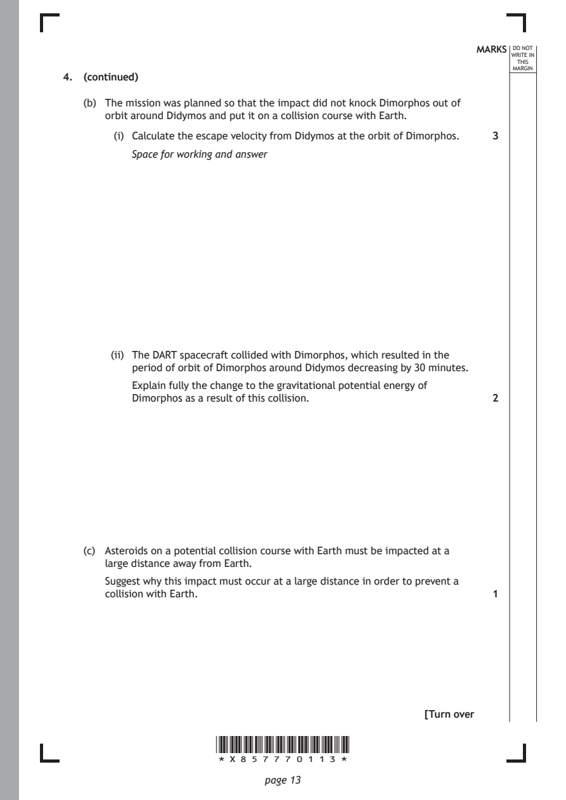
Selectable page text
MARKS _{W}^{D}_{R}^{O}_{I} _{T}^{N}OT
E IN
THIS
MARGIN
4. (continued)
(b) The mission was planned so that the impact did not knock Dimorphos out of
orbit around Didymos and put it on a collision course with Earth.
(i) Calculate the escape velocity from Didymos at the orbit of Dimorphos. 3
Space for working and answer
(ii) The DART spacecraft collided with Dimorphos, which resulted in the
period of orbit of Dimorphos around Didymos decreasing by 30 minutes.
Explain fully the change to the gravitational potential energy of
Dimorphos as a result of this collision. 2
(c) Asteroids on a potential collision course with Earth must be impacted at a
large distance away from Earth.
Suggest why this impact must occur at a large distance in order to prevent a
collision with Earth. 1
[Turn over
*X857770113*
page 13PDF page 14
Question 5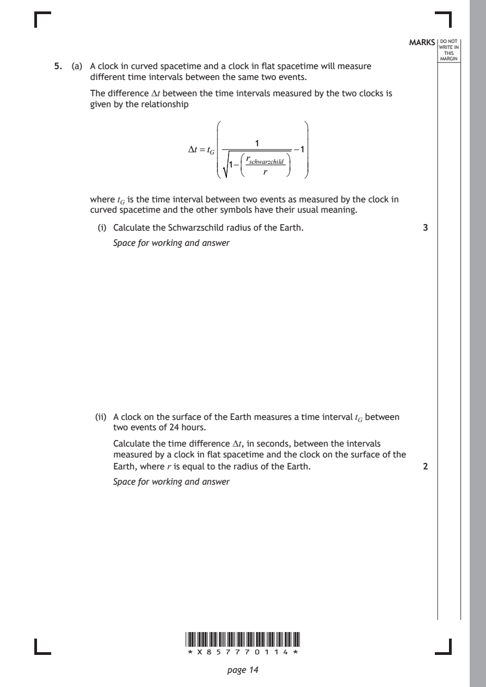
Selectable page text
MARKS _{W}^{D}_{R}^{O}_{I} _{T}^{N}OT
E IN
THIS
MARGIN
5. (a) A clock in curved spacetime and a clock in flat spacetime will measure
different time intervals between the same two events.
The difference ∆t between the time intervals measured by the two clocks is
given by the relationship
1
Δt =t_{G} −1
rₛ_{c}ₕ_{w}ₐᵣ
1−
r^{z}^{c}^{h}ⁱ^{l}^{d}
where t_{G} is the time interval between two events as measured by the clock in
curved spacetime and the other symbols have their usual meaning.
(i) Calculate the Schwarzschild radius of the Earth. 3
Space for working and answer
(ii) A clock on the surface of the Earth measures a time interval t_{G} between
two events of 24 hours.
Calculate the time difference ∆t, in seconds, between the intervals
measured by a clock in flat spacetime and the clock on the surface of the
Earth, where r is equal to the radius of the Earth. 2
Space for working and answer
*X857770114*
page 14PDF page 15
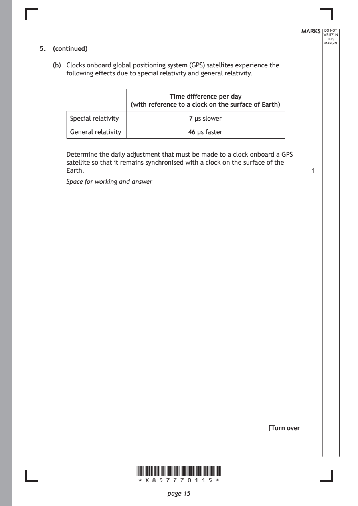
Selectable page text
MARKS _{W}^{D}_{R}^{O}_{I} _{T}^{N}OT
E IN
THIS
MARGIN
5. (continued)
(b) Clocks onboard global positioning system (GPS) satellites experience the
following effects due to special relativity and general relativity.
Time difference per day
(with reference to a clock on the surface of Earth)
Special relativity 7 µs slower
General relativity 46 µs faster
Determine the daily adjustment that must be made to a clock onboard a GPS
satellite so that it remains synchronised with a clock on the surface of the
Earth. 1
Space for working and answer
[Turn over
*X857770115*
page 15PDF page 16
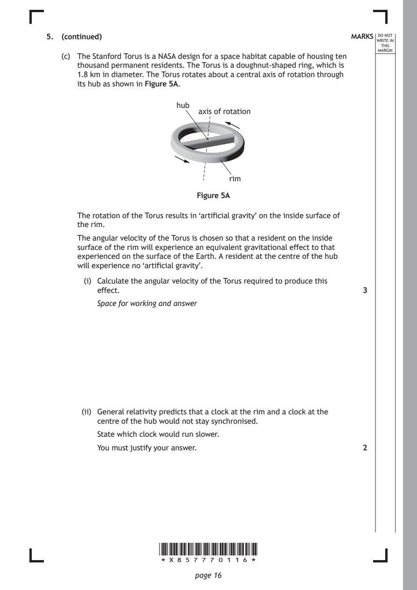
Selectable page text
5. (continued) MARKS _{W}^{D}_{R}^{O}_{I} _{T}^{N}OT
E IN
THIS
MARGIN
(c) The Stanford Torus is a NASA design for a space habitat capable of housing ten
thousand permanent residents. The Torus is a doughnut-shaped ring, which is
1.8 km in diameter. The Torus rotates about a central axis of rotation through
its hub as shown in Figure 5A.
hub
axis of rotation
rim
Figure 5A
The rotation of the Torus results in ‘artificial gravity’ on the inside surface of
the rim.
The angular velocity of the Torus is chosen so that a resident on the inside
surface of the rim will experience an equivalent gravitational effect to that
experienced on the surface of the Earth. A resident at the centre of the hub
will experience no ‘artificial gravity’.
(i) Calculate the angular velocity of the Torus required to produce this
effect. 3
Space for working and answer
(ii) General relativity predicts that a clock at the rim and a clock at the
centre of the hub would not stay synchronised.
State which clock would run slower.
You must justify your answer. 2
*X857770116*
page 16PDF page 17
Question 6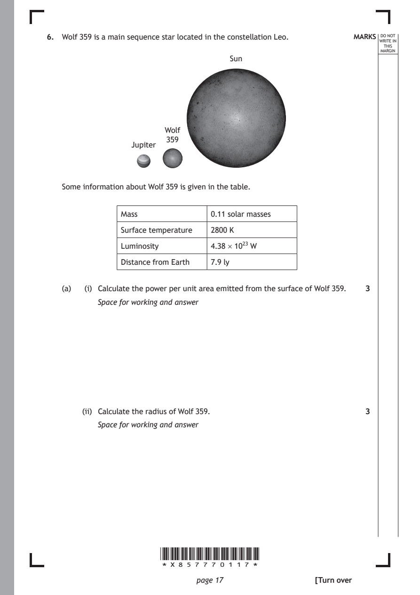
Selectable page text
6. Wolf 359 is a main sequence star located in the constellation Leo. MARKS _{W}^{D}_{R}^{O}_{I} _{T}^{N}OT
E IN
THIS
MARGIN
Sun
Wolf
359
Jupiter
Some information about Wolf 359 is given in the table.
Mass 0.11 solar masses
Surface temperature 2800 K
Luminosity 4.38 × 10²³ W
Distance from Earth 7.9 ly
(a) (i) Calculate the power per unit area emitted from the surface of Wolf 359. 3
Space for working and answer
(ii) Calculate the radius of Wolf 359. 3
Space for working and answer
*X857770117*
page 17 [Turn overPDF page 18
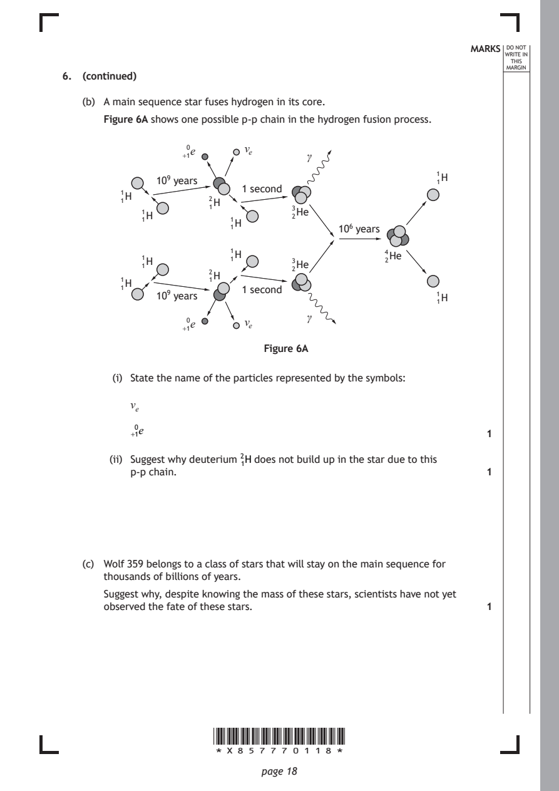
Selectable page text
MARKS _{W}^{D}_{R}^{O}_{I} _{T}^{N}OT
E IN
THIS
MARGIN
6. (continued)
(b) A main sequence star fuses hydrogen in its core.
Figure 6A shows one possible p-p chain in the hydrogen fusion process.
0e vₑ
+1 γ
1H
10⁹ years 1
1 second
1H
1 2H
1H 1 3
2
He
1 1H
1 10⁶ years
1H 4He
1
1
H 1 3He 2
2
2H
1H 1
1 1 second
10⁹ years 1H
1
γ
0e vₑ
+1
Figure 6A
(i) State the name of the particles represented by the symbols:
νₑ
0e
+1 1
(ii) Suggest why deuterium ²₁H does not build up in the star due to this
p-p chain. 1
(c) Wolf 359 belongs to a class of stars that will stay on the main sequence for
thousands of billions of years.
Suggest why, despite knowing the mass of these stars, scientists have not yet
observed the fate of these stars. 1
*X857770118*
page 18PDF page 19
Question 7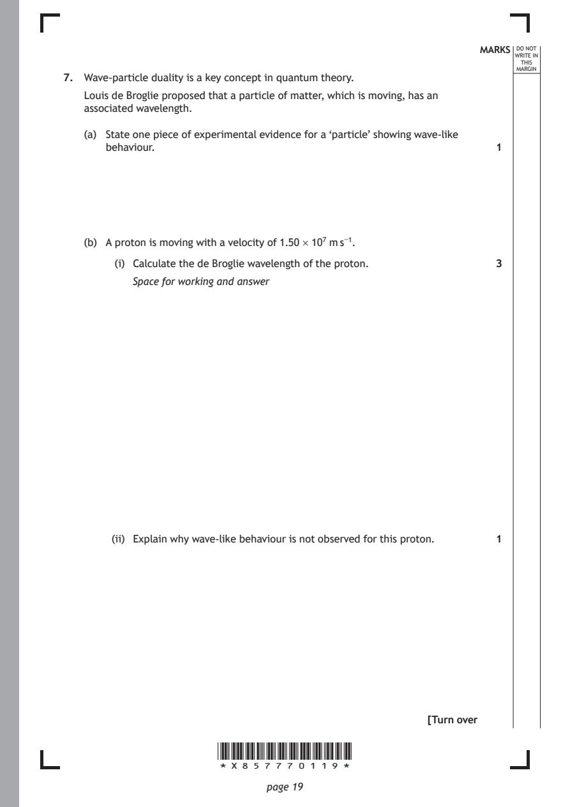
Selectable page text
MARKS _{W}^{D}_{R}^{O}_{I} _{T}^{N}OT
E IN
THIS
MARGIN
7. Wave-particle duality is a key concept in quantum theory.
Louis de Broglie proposed that a particle of matter, which is moving, has an
associated wavelength.
(a) State one piece of experimental evidence for a ‘particle’ showing wave-like
behaviour. 1
(b) A proton is moving with a velocity of 1.50 × 10⁷ m s⁻¹.
(i) Calculate the de Broglie wavelength of the proton. 3
Space for working and answer
(ii) Explain why wave-like behaviour is not observed for this proton. 1
[Turn over
*X857770119*
page 19PDF page 20
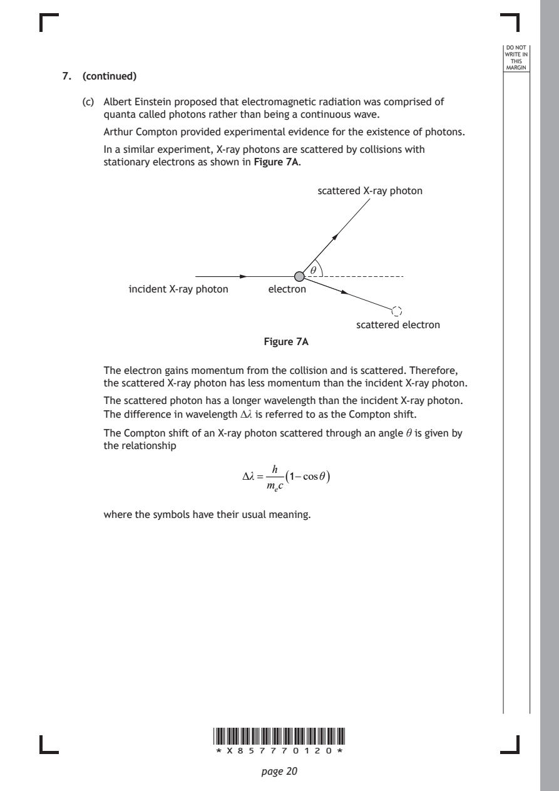
Selectable page text
DO NOT
WRITE IN
THIS
MARGIN
7. (continued)
(c) Albert Einstein proposed that electromagnetic radiation was comprised of
quanta called photons rather than being a continuous wave.
Arthur Compton provided experimental evidence for the existence of photons.
In a similar experiment, X-ray photons are scattered by collisions with
stationary electrons as shown in Figure 7A.
scattered X-ray photon
θ
incident X-ray photon electron
scattered electron
Figure 7A
The electron gains momentum from the collision and is scattered. Therefore,
the scattered X-ray photon has less momentum than the incident X-ray photon.
The scattered photon has a longer wavelength than the incident X-ray photon.
The difference in wavelength ∆λ is referred to as the Compton shift.
The Compton shift of an X-ray photon scattered through an angle θ is given by
the relationship
h
Δλ= 1−cosθ
mₑc
where the symbols have their usual meaning.
*X857770120*
page 20PDF page 21
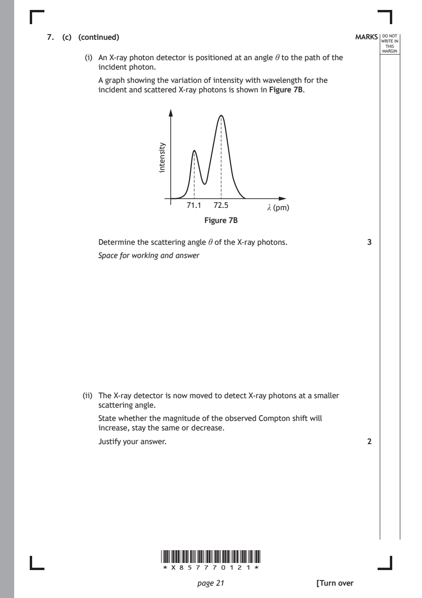
Selectable page text
7. (c) (continued) MARKS _{W}^{D}_{R}^{O}_{I} _{T}^{N}OT
E IN
THIS
MARGIN
(i) An X-ray photon detector is positioned at an angle θ to the path of the
incident photon.
A graph showing the variation of intensity with wavelength for the
incident and scattered X-ray photons is shown in Figure 7B.
71.1 72.5
Figure 7B
*X857770121*
page 21
ytisnetni
λ (pm)
Determine the scattering angle θ of the X-ray photons. 3
Space for working and answer
(ii) The X-ray detector is now moved to detect X-ray photons at a smaller
scattering angle.
State whether the magnitude of the observed Compton shift will
increase, stay the same or decrease.
Justify your answer. 2
[Turn overPDF page 22
Question 8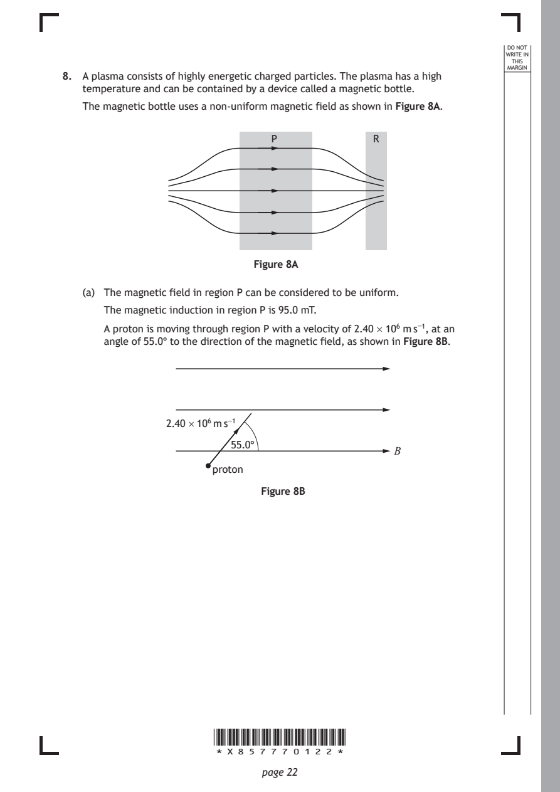
Selectable page text
DO NOT
WRITE IN
THIS
MARGIN
8. A plasma consists of highly energetic charged particles. The plasma has a high
temperature and can be contained by a device called a magnetic bottle.
The magnetic bottle uses a non-uniform magnetic field as shown in Figure 8A.
P R
Figure 8A
(a) The magnetic field in region P can be considered to be uniform.
The magnetic induction in region P is 95.0 mT.
A proton is moving through region P with a velocity of 2.40 × 10⁶ m s⁻¹, at an
angle of 55.0° to the direction of the magnetic field, as shown in Figure 8B.
2.40 × 10⁶ m s⁻¹
55.0°
B
proton
Figure 8B
*X857770122*
page 22PDF page 23
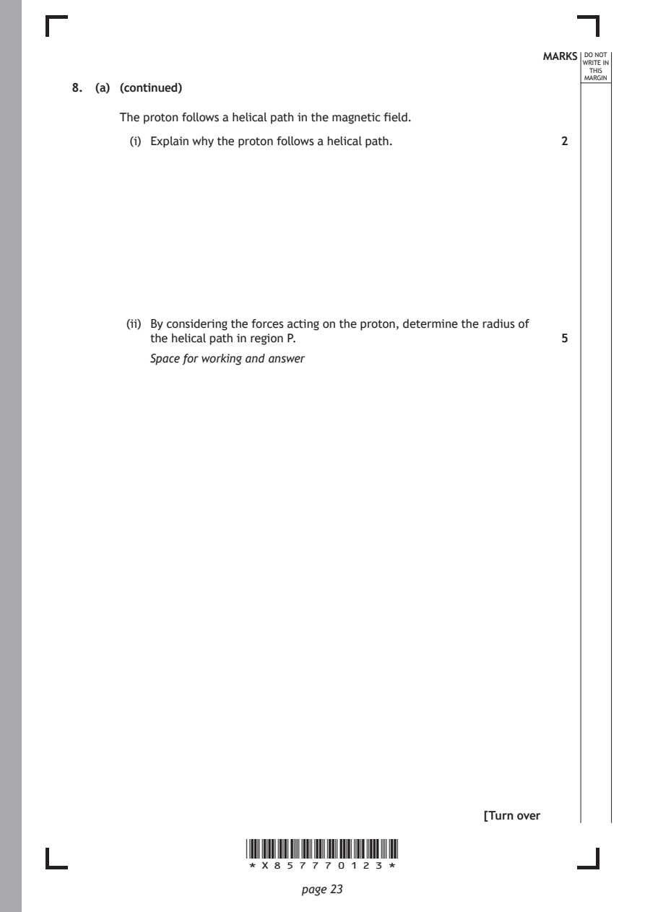
Selectable page text
MARKS _{W}^{D}_{R}^{O}_{I} _{T}^{N}OT
E IN
THIS
MARGIN
8. (a) (continued)
The proton follows a helical path in the magnetic field.
(i) Explain why the proton follows a helical path. 2
(ii) By considering the forces acting on the proton, determine the radius of
the helical path in region P. 5
Space for working and answer
[Turn over
*X857770123*
page 23PDF page 24
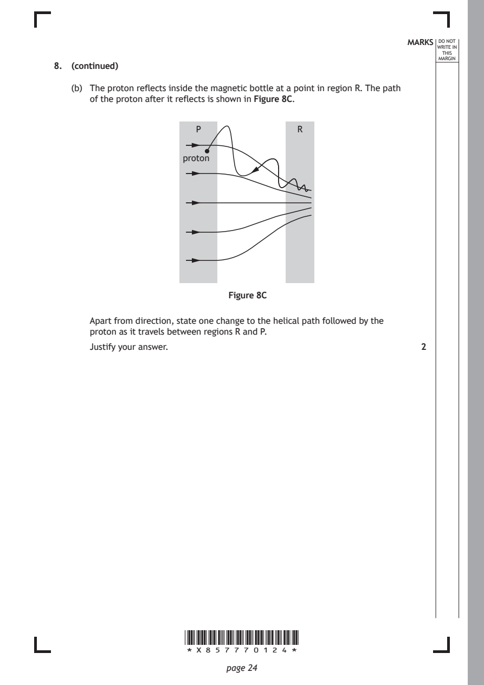
Selectable page text
MARKS _{W}^{D}_{R}^{O}_{I} _{T}^{N}OT
E IN
THIS
MARGIN
8. (continued)
(b) The proton reflects inside the magnetic bottle at a point in region R. The path
of the proton after it reflects is shown in Figure 8C.
P R
proton
Figure 8C
Apart from direction, state one change to the helical path followed by the
proton as it travels between regions R and P.
Justify your answer. 2
*X857770124*
page 24PDF page 25
Question 9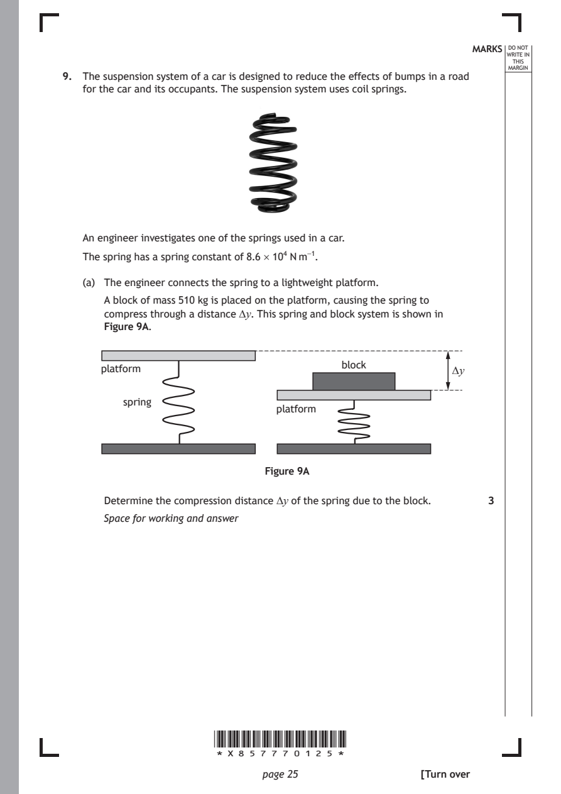
Selectable page text
MARKS _{W}^{D}_{R}^{O}_{I} _{T}^{N}OT
E IN
THIS
MARGIN
9. The suspension system of a car is designed to reduce the effects of bumps in a road
for the car and its occupants. The suspension system uses coil springs.
An engineer investigates one of the springs used in a car.
The spring has a spring constant of 8.6 × 10⁴ N m⁻¹.
(a) The engineer connects the spring to a lightweight platform.
A block of mass 510 kg is placed on the platform, causing the spring to
compress through a distance ∆y. This spring and block system is shown in
Figure 9A.
block
platform ∆y
spring
platform
Figure 9A
Determine the compression distance ∆y of the spring due to the block. 3
Space for working and answer
*X857770125*
page 25 [Turn overPDF page 26
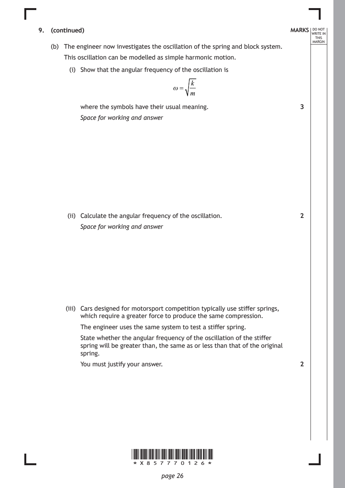
Selectable page text
9. (continued) MARKS _{W}^{D}_{R}^{O}_{I} _{T}^{N}OT
E IN
THIS
MARGIN
(b) The engineer now investigates the oscillation of the spring and block system.
This oscillation can be modelled as simple harmonic motion.
(i) Show that the angular frequency of the oscillation is
k
ω=
m
where the symbols have their usual meaning. 3
Space for working and answer
(ii) Calculate the angular frequency of the oscillation. 2
Space for working and answer
(iii) Cars designed for motorsport competition typically use stiffer springs,
which require a greater force to produce the same compression.
The engineer uses the same system to test a stiffer spring.
State whether the angular frequency of the oscillation of the stiffer
spring will be greater than, the same as or less than that of the original
spring.
You must justify your answer. 2
*X857770126*
page 26PDF page 27
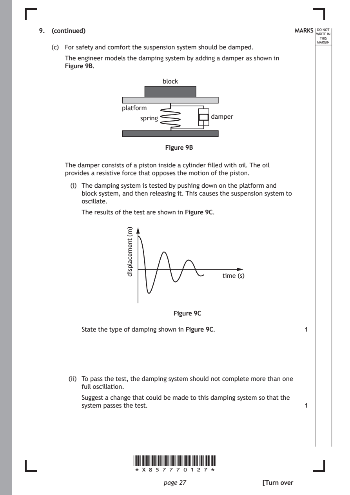
Selectable page text
9. (continued) MARKS _{W}^{D}_{R}^{O}_{I} _{T}^{N}OT
E IN
THIS
MARGIN
(c) For safety and comfort the suspension system should be damped.
The engineer models the damping system by adding a damper as shown in
Figure 9B.
block
platform
spring damper
Figure 9B
The damper consists of a piston inside a cylinder filled with oil. The oil
provides a resistive force that opposes the motion of the piston.
(i) The damping system is tested by pushing down on the platform and
block system, and then releasing it. This causes the suspension system to
oscillate.
The results of the test are shown in Figure 9C.
*X857770127*
page 27
)m(
tnemecalpsid
time (s)
Figure 9C
State the type of damping shown in Figure 9C. 1
(ii) To pass the test, the damping system should not complete more than one
full oscillation.
Suggest a change that could be made to this damping system so that the
system passes the test. 1
[Turn overPDF page 28
Question 10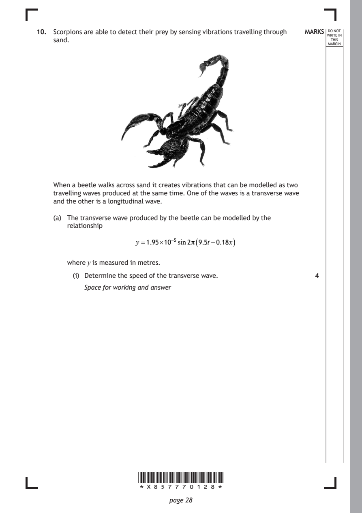
Selectable page text
10. Scorpions are able to detect their prey by sensing vibrations travelling through MARKS _{W}^{D}_{R}^{O}_{I} _{T}^{N}OT
E IN
sand. THIS
MARGIN
When a beetle walks across sand it creates vibrations that can be modelled as two
travelling waves produced at the same time. One of the waves is a transverse wave
and the other is a longitudinal wave.
(a) The transverse wave produced by the beetle can be modelled by the
relationship
y =1.95×10⁻⁵sin2π 9.5t−0.18x
where y is measured in metres.
(i) Determine the speed of the transverse wave. 4
Space for working and answer
*X857770128*
page 28PDF page 29
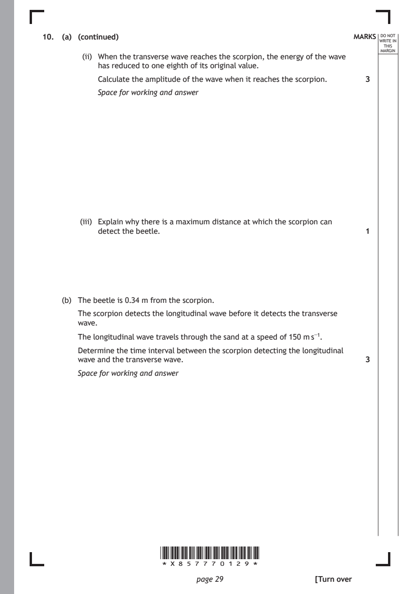
Selectable page text
10. (a) (continued) MARKS _{W}^{D}_{R}^{O}_{I} _{T}^{N}OT
E IN
THIS
MARGIN
(ii) When the transverse wave reaches the scorpion, the energy of the wave
has reduced to one eighth of its original value.
Calculate the amplitude of the wave when it reaches the scorpion. 3
Space for working and answer
(iii) Explain why there is a maximum distance at which the scorpion can
detect the beetle. 1
(b) The beetle is 0.34 m from the scorpion.
The scorpion detects the longitudinal wave before it detects the transverse
wave.
The longitudinal wave travels through the sand at a speed of 150 m s⁻¹.
Determine the time interval between the scorpion detecting the longitudinal
wave and the transverse wave. 3
Space for working and answer
*X857770129*
page 29 [Turn overPDF page 30
Question 11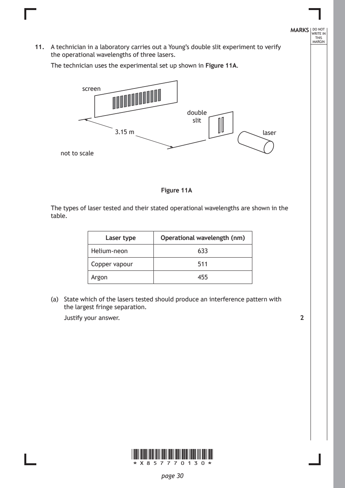
Selectable page text
MARKS _{W}^{D}_{R}^{O}_{I} _{T}^{N}OT
E IN
THIS
MARGIN
11. A technician in a laboratory carries out a Young’s double slit experiment to verify
the operational wavelengths of three lasers.
The technician uses the experimental set up shown in Figure 11A.
screen
double
slit
3.15 m laser
not to scale
Figure 11A
The types of laser tested and their stated operational wavelengths are shown in the
table.
Laser type Operational wavelength (nm)
Helium-neon 633
Copper vapour 511
Argon 455
(a) State which of the lasers tested should produce an interference pattern with
the largest fringe separation.
Justify your answer. 2
*X857770130*
page 30PDF page 31
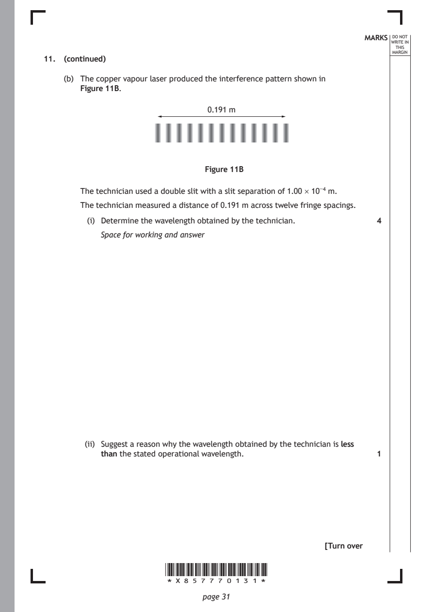
Selectable page text
MARKS _{W}^{D}_{R}^{O}_{I} _{T}^{N}OT
E IN
THIS
MARGIN
11. (continued)
(b) The copper vapour laser produced the interference pattern shown in
Figure 11B.
0.191 m
Figure 11B
The technician used a double slit with a slit separation of 1.00 × 10⁻⁴ m.
The technician measured a distance of 0.191 m across twelve fringe spacings.
(i) Determine the wavelength obtained by the technician. 4
Space for working and answer
(ii) Suggest a reason why the wavelength obtained by the technician is less
than the stated operational wavelength. 1
[Turn over
*X857770131*
page 31PDF page 32
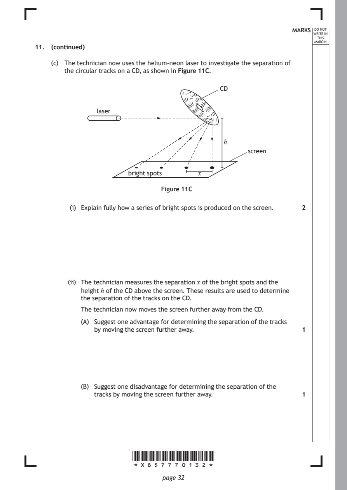
Selectable page text
MARKS _{W}^{D}_{R}^{O}_{I} _{T}^{N}OT
E IN
THIS
MARGIN
11. (continued)
(c) The technician now uses the helium-neon laser to investigate the separation of
the circular tracks on a CD, as shown in Figure 11C.
CD
laser
h
screen
bright spots x
Figure 11C
(i) Explain fully how a series of bright spots is produced on the screen. 2
(ii) The technician measures the separation x of the bright spots and the
height h of the CD above the screen. These results are used to determine
the separation of the tracks on the CD.
The technician now moves the screen further away from the CD.
(A) Suggest one advantage for determining the separation of the tracks
by moving the screen further away. 1
(B) Suggest one disadvantage for determining the separation of the
tracks by moving the screen further away. 1
*X857770132*
page 32PDF page 33

Selectable page text
[Turn over for next question
DO NOT WRITE ON THIS PAGE
*X857770133*
page 33PDF page 34
Question 12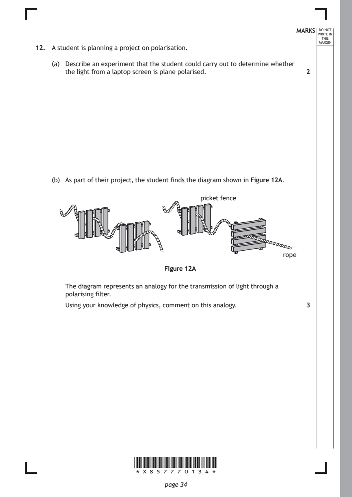
Selectable page text
MARKS _{W}^{D}_{R}^{O}_{I} _{T}^{N}OT
E IN
THIS
MARGIN
12. A student is planning a project on polarisation.
(a) Describe an experiment that the student could carry out to determine whether
the light from a laptop screen is plane polarised. 2
(b) As part of their project, the student finds the diagram shown in Figure 12A.
picket fence
rope
Figure 12A
The diagram represents an analogy for the transmission of light through a
polarising filter.
Using your knowledge of physics, comment on this analogy. 3
*X857770134*
page 34PDF page 35
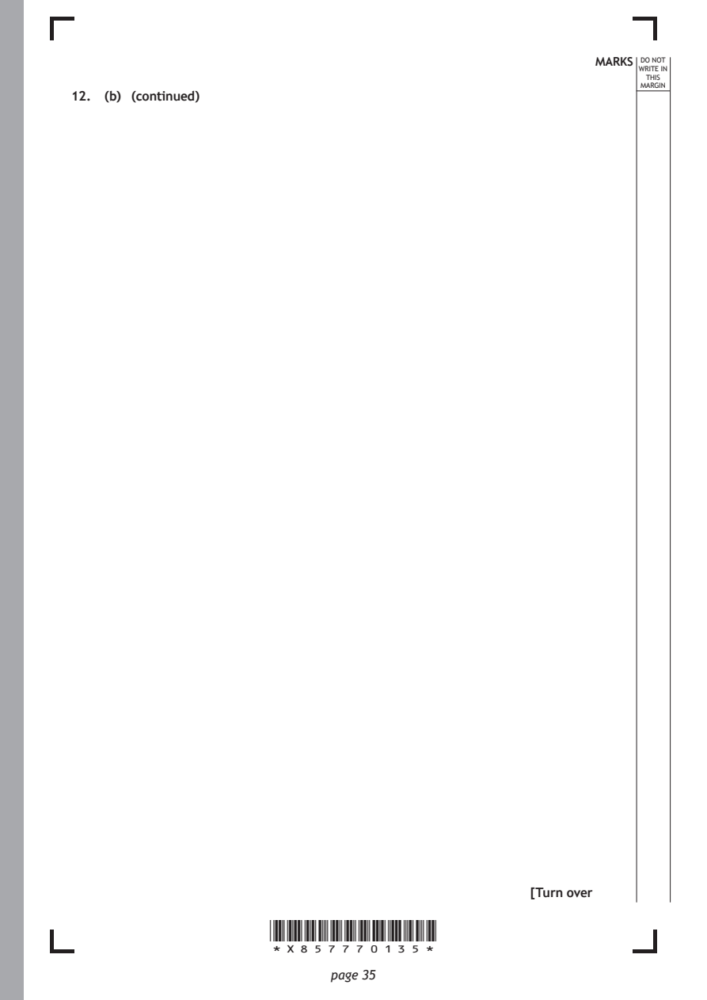
Selectable page text
MARKS _{W}^{D}_{R}^{O}_{I} _{T}^{N}OT
E IN
THIS
MARGIN
12. (b) (continued)
[Turn over
*X857770135*
page 35PDF page 36
Question 13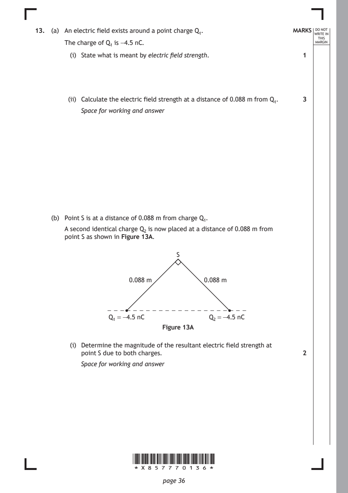
Selectable page text
13. (a) An electric field exists around a point charge Q₁. MARKS _{W}^{D}_{R}^{O}_{I} _{T}^{N}OT
E IN
THIS
The charge of Q₁ is −4.5 nC. MARGIN
(i) State what is meant by electric field strength. 1
(ii) Calculate the electric field strength at a distance of 0.088 m from Q₁. 3
Space for working and answer
(b) Point S is at a distance of 0.088 m from charge Q₁.
A second identical charge Q₂ is now placed at a distance of 0.088 m from
point S as shown in Figure 13A.
S
0.088 m 0.088 m
Q₁ = −4.5 nC Q₂ = −4.5 nC
Figure 13A
(i) Determine the magnitude of the resultant electric field strength at
point S due to both charges. 2
Space for working and answer
*X857770136*
page 36PDF page 37
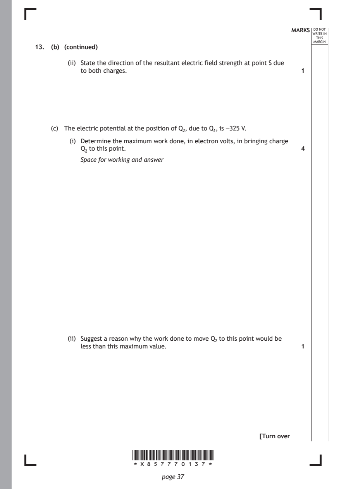
Selectable page text
MARKS _{W}^{D}_{R}^{O}_{I} _{T}^{N}OT
E IN
THIS
MARGIN
13. (b) (continued)
(ii) State the direction of the resultant electric field strength at point S due
to both charges. 1
(c) The electric potential at the position of Q₂, due to Q₁, is −325 V.
(i) Determine the maximum work done, in electron volts, in bringing charge
Q₂ to this point. 4
Space for working and answer
(ii) Suggest a reason why the work done to move Q₂ to this point would be
less than this maximum value. 1
[Turn over
*X857770137*
page 37PDF page 38
Question 14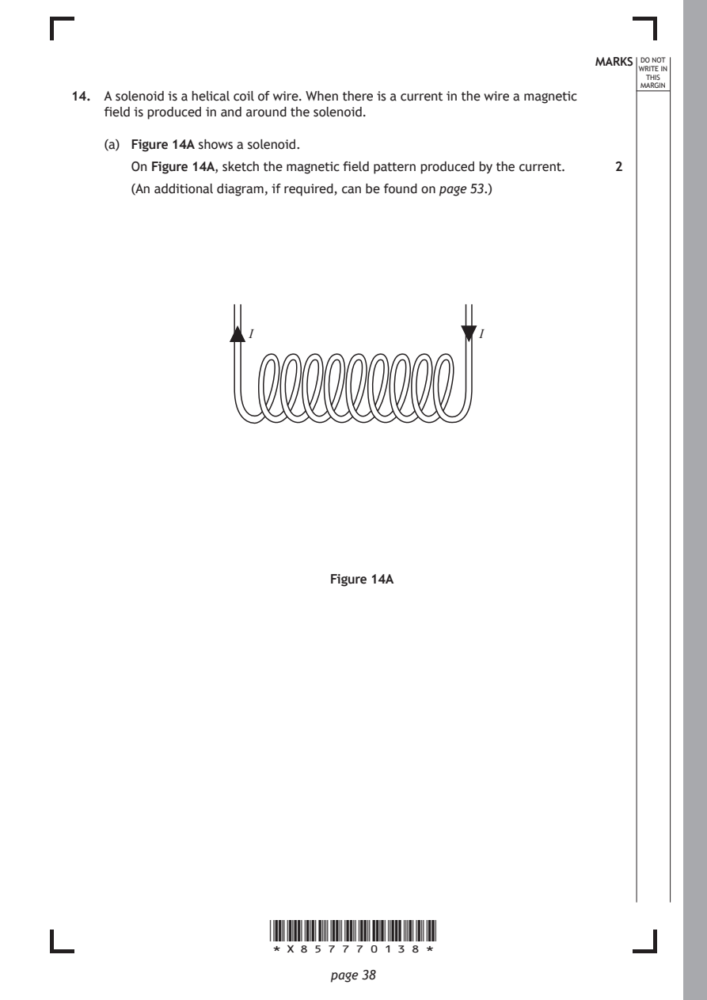
Selectable page text
MARKS _{W}^{D}_{R}^{O}_{I} _{T}^{N}OT
E IN
THIS
MARGIN
14. A solenoid is a helical coil of wire. When there is a current in the wire a magnetic
field is produced in and around the solenoid.
(a) Figure 14A shows a solenoid.
On Figure 14A, sketch the magnetic field pattern produced by the current. 2
(An additional diagram, if required, can be found on page 53.)
I I
Figure 14A
*X857770138*
page 38PDF page 39
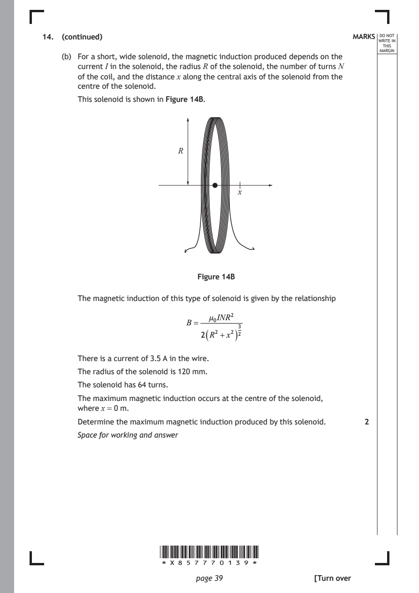
Selectable page text
14. (continued) MARKS _{W}^{D}_{R}^{O}_{I} _{T}^{N}OT
E IN
THIS
MARGIN
(b) For a short, wide solenoid, the magnetic induction produced depends on the
current I in the solenoid, the radius R of the solenoid, the number of turns N
of the coil, and the distance x along the central axis of the solenoid from the
centre of the solenoid.
This solenoid is shown in Figure 14B.
R
x
Figure 14B
The magnetic induction of this type of solenoid is given by the relationship
μ₀INR²
B=
2 R² +x² ²³
There is a current of 3.5 A in the wire.
The radius of the solenoid is 120 mm.
The solenoid has 64 turns.
The maximum magnetic induction occurs at the centre of the solenoid,
where x = 0 m.
Determine the maximum magnetic induction produced by this solenoid. 2
Space for working and answer
*X857770139*
page 39 [Turn overPDF page 40
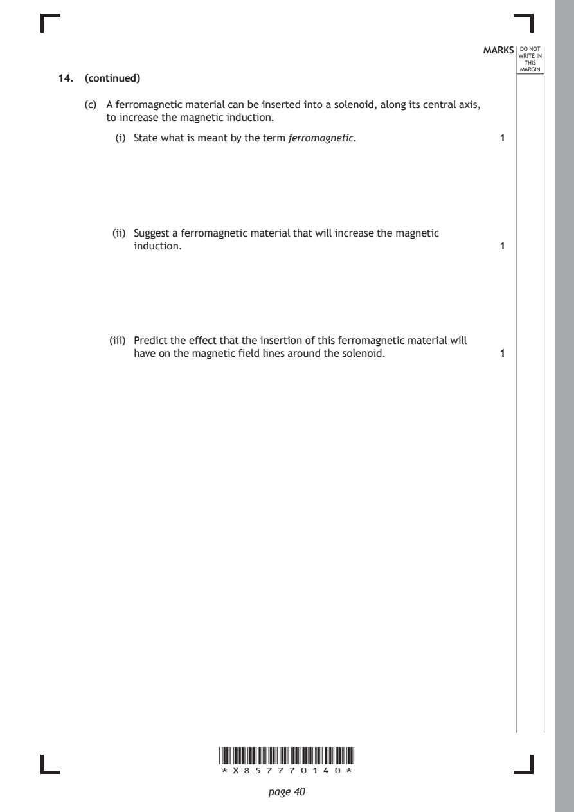
Selectable page text
MARKS _{W}^{D}_{R}^{O}_{I} _{T}^{N}OT
E IN
THIS
MARGIN
14. (continued)
(c) A ferromagnetic material can be inserted into a solenoid, along its central axis,
to increase the magnetic induction.
(i) State what is meant by the term ferromagnetic. 1
(ii) Suggest a ferromagnetic material that will increase the magnetic
induction. 1
(iii) Predict the effect that the insertion of this ferromagnetic material will
have on the magnetic field lines around the solenoid. 1
*X857770140*
page 40PDF page 41
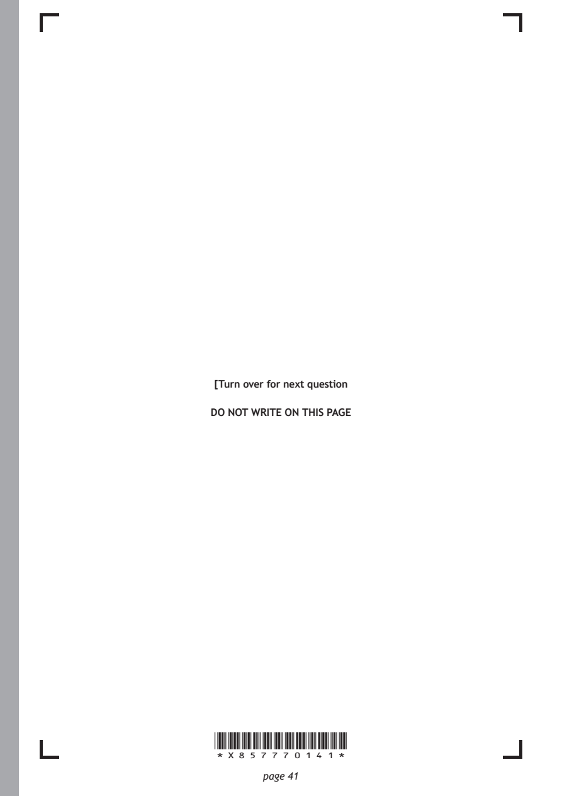
Selectable page text
[Turn over for next question
DO NOT WRITE ON THIS PAGE
*X857770141*
page 41PDF page 42
Question 15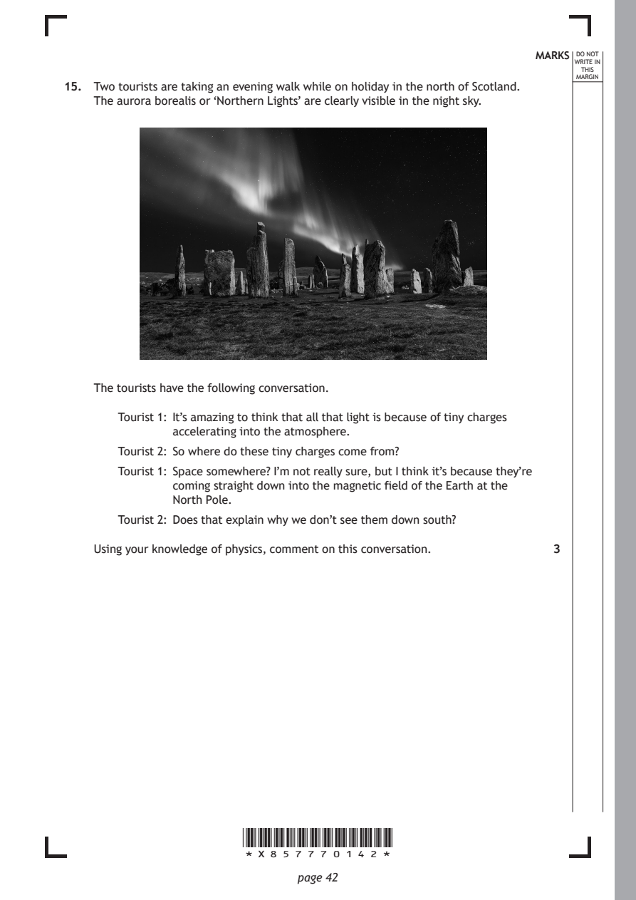
Selectable page text
MARKS _{W}^{D}_{R}^{O}_{I} _{T}^{N}OT
E IN
THIS
MARGIN
15. Two tourists are taking an evening walk while on holiday in the north of Scotland.
The aurora borealis or ‘Northern Lights’ are clearly visible in the night sky.
The tourists have the following conversation.
Tourist 1: It’s amazing to think that all that light is because of tiny charges
accelerating into the atmosphere.
Tourist 2: So where do these tiny charges come from?
Tourist 1: Space somewhere? I’m not really sure, but I think it’s because they’re
coming straight down into the magnetic field of the Earth at the
North Pole.
Tourist 2: Does that explain why we don’t see them down south?
Using your knowledge of physics, comment on this conversation. 3
*X857770142*
page 42PDF page 43
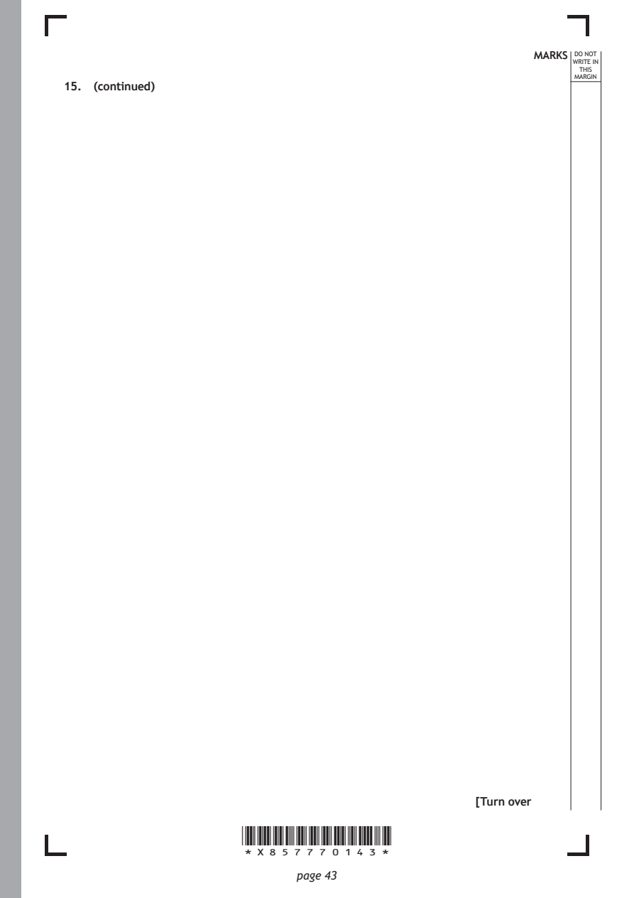
Selectable page text
MARKS _{W}^{D}_{R}^{O}_{I} _{T}^{N}OT
E IN
THIS
MARGIN
15. (continued)
[Turn over
*X857770143*
page 43PDF page 44
Question 16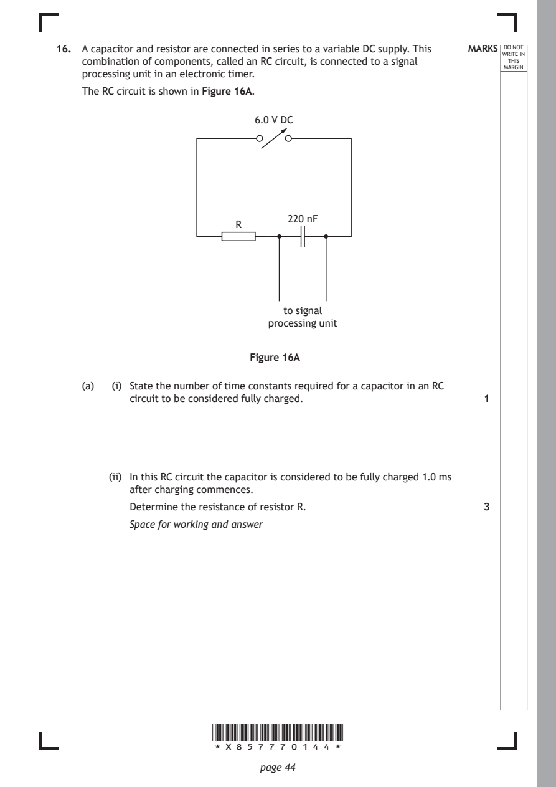
Selectable page text
16. A capacitor and resistor are connected in series to a variable DC supply. This MARKS _{W}^{D}_{R}^{O}_{I} _{T}^{N}OT
E IN
combination of components, called an RC circuit, is connected to a signal THIS
MARGIN
processing unit in an electronic timer.
The RC circuit is shown in Figure 16A.
6.0 V DC
220 nF
R
to signal
processing unit
Figure 16A
(a) (i) State the number of time constants required for a capacitor in an RC
circuit to be considered fully charged. 1
(ii) In this RC circuit the capacitor is considered to be fully charged 1.0 ms
after charging commences.
Determine the resistance of resistor R. 3
Space for working and answer
*X857770144*
page 44PDF page 45
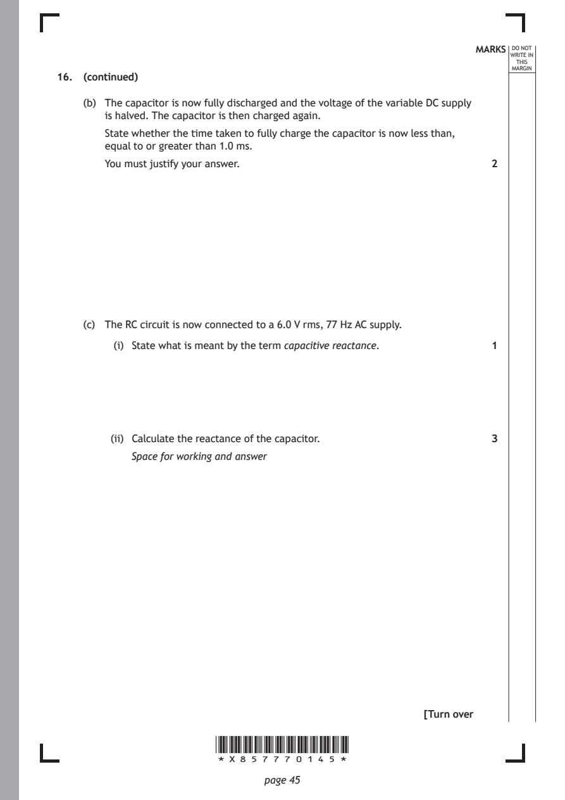
Selectable page text
MARKS _{W}^{D}_{R}^{O}_{I} _{T}^{N}OT
E IN
THIS
MARGIN
16. (continued)
(b) The capacitor is now fully discharged and the voltage of the variable DC supply
is halved. The capacitor is then charged again.
State whether the time taken to fully charge the capacitor is now less than,
equal to or greater than 1.0 ms.
You must justify your answer. 2
(c) The RC circuit is now connected to a 6.0 V rms, 77 Hz AC supply.
(i) State what is meant by the term capacitive reactance. 1
(ii) Calculate the reactance of the capacitor. 3
Space for working and answer
[Turn over
*X857770145*
page 45PDF page 46
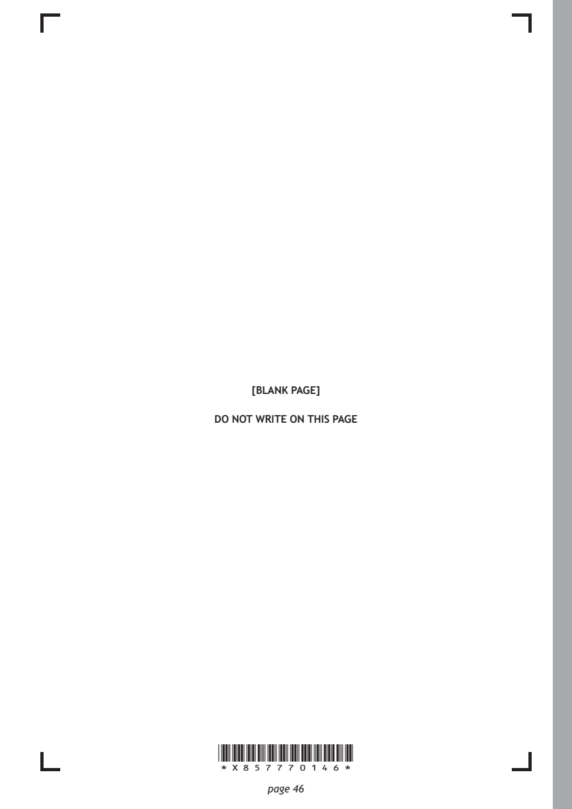
Selectable page text
[BLANK PAGE]
DO NOT WRITE ON THIS PAGE
*X857770146*
page 46PDF page 47
Question 17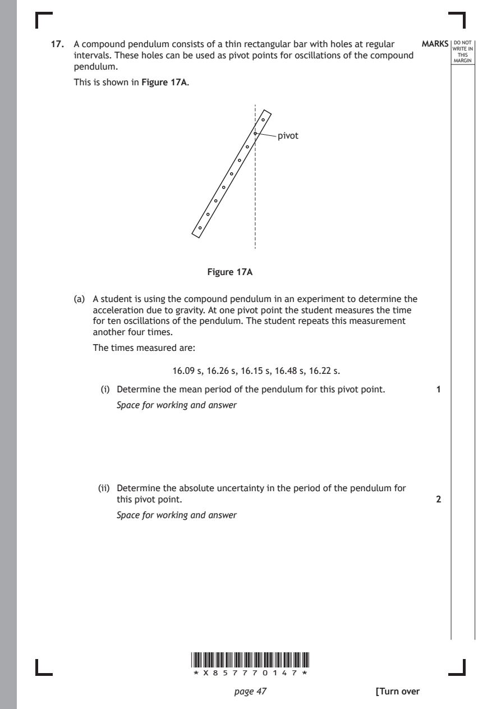
Selectable page text
17. A compound pendulum consists of a thin rectangular bar with holes at regular MARKS _{W}^{D}_{R}^{O}_{I} _{T}^{N}OT
E IN
intervals. These holes can be used as pivot points for oscillations of the compound THIS
MARGIN
pendulum.
This is shown in Figure 17A.
pivot
Figure 17A
(a) A student is using the compound pendulum in an experiment to determine the
acceleration due to gravity. At one pivot point the student measures the time
for ten oscillations of the pendulum. The student repeats this measurement
another four times.
The times measured are:
16.09 s, 16.26 s, 16.15 s, 16.48 s, 16.22 s.
(i) Determine the mean period of the pendulum for this pivot point. 1
Space for working and answer
(ii) Determine the absolute uncertainty in the period of the pendulum for
this pivot point. 2
Space for working and answer
*X857770147*
page 47 [Turn overPDF page 48
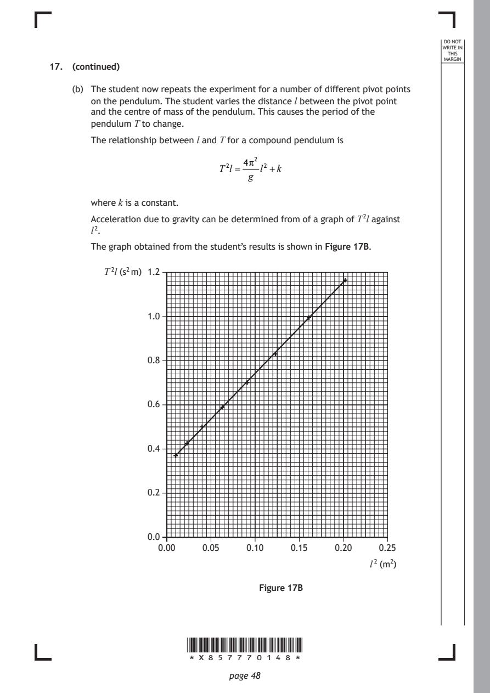
Selectable page text
DO NOT
WRITE IN
THIS
MARGIN
17. (continued)
(b) The student now repeats the experiment for a number of different pivot points
on the pendulum. The student varies the distance l between the pivot point
and the centre of mass of the pendulum. This causes the period of the
pendulum T to change.
The relationship between l and T for a compound pendulum is
4π²
T²l = l² +k
g
where k is a constant.
Acceleration due to gravity can be determined from of a graph of T ²l against
l ².
The graph obtained from the student’s results is shown in Figure 17B.
T ²l (s² m) 1.2
1.0
0.8
0.6
0.4
0.2
0.0
0.00 0.05 0.10 0.15 0.20 0.25
l ² (m²)
Figure 17B
*X857770148*
page 48PDF page 49
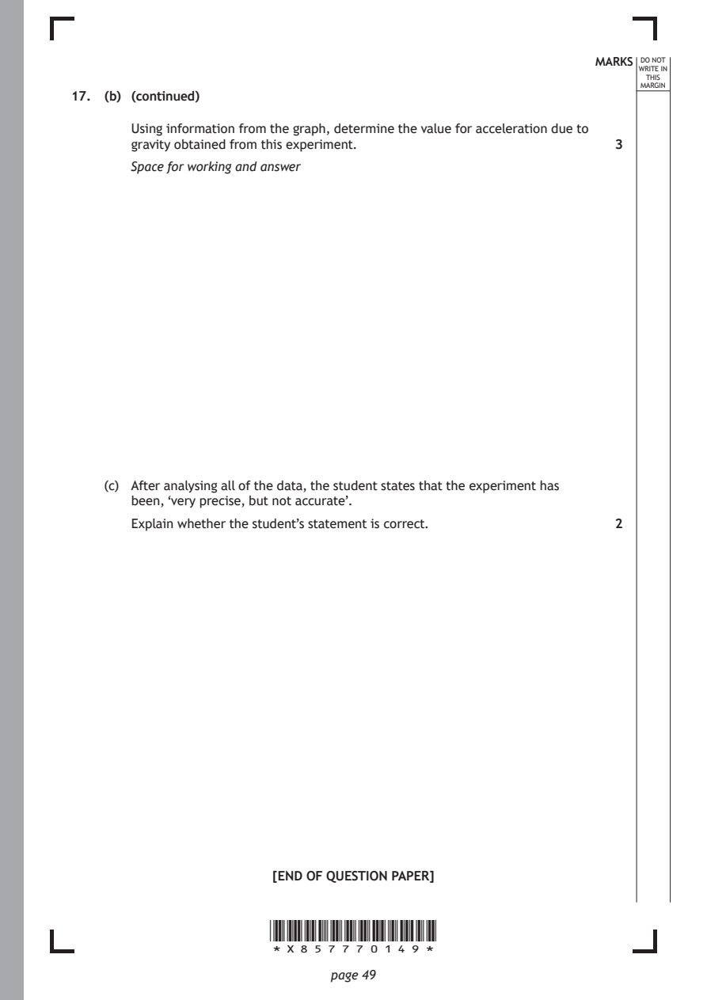
Selectable page text
MARKS _{W}^{D}_{R}^{O}_{I} _{T}^{N}OT
E IN
THIS
MARGIN
17. (b) (continued)
Using information from the graph, determine the value for acceleration due to
gravity obtained from this experiment. 3
Space for working and answer
(c) After analysing all of the data, the student states that the experiment has
been, ‘very precise, but not accurate’.
Explain whether the student’s statement is correct. 2
[END OF QUESTION PAPER]
*X857770149*
page 49PDF page 50
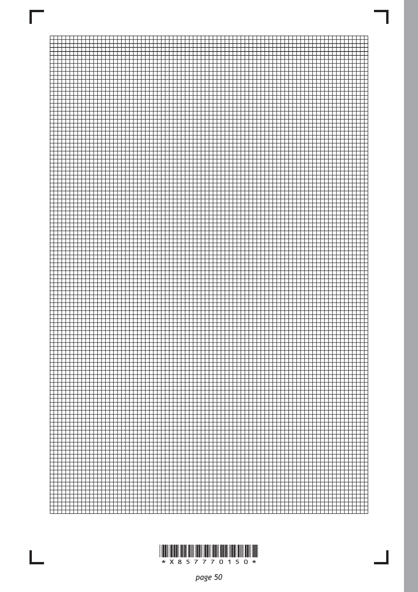
Selectable page text
*X857770150*
page 50PDF page 51
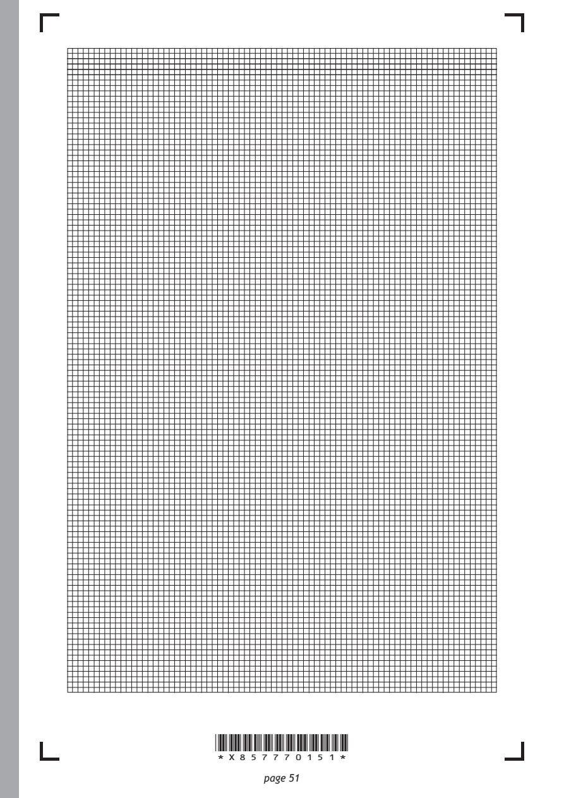
Selectable page text
*X857770151*
page 51PDF page 52
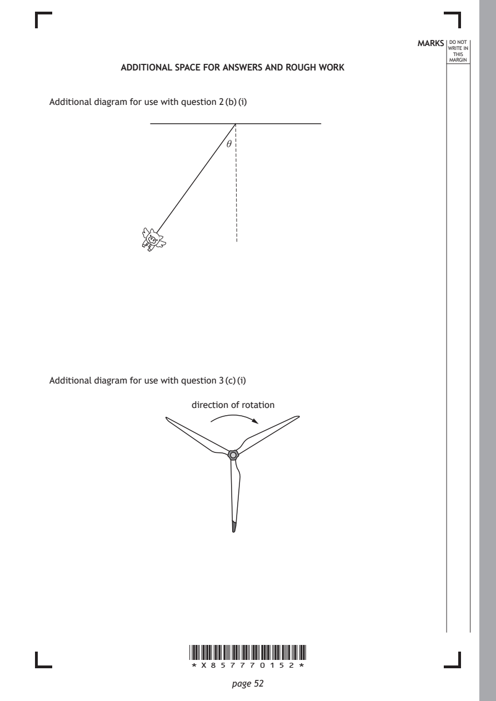
Selectable page text
MARKS _{W}^{D}_{R}^{O}_{I} _{T}^{N}OT
E IN
THIS
MARGIN
ADDITIONAL SPACE FOR ANSWERS AND ROUGH WORK
Additional diagram for use with question 2 (b) (i)
θ
Additional diagram for use with question 3 (c) (i)
direction of rotation
*X857770152*
page 52PDF page 53
Selectable page text
MARKS _{W}^{D}_{R}^{O}_{I} _{T}^{N}OT
E IN
THIS
MARGIN
ADDITIONAL SPACE FOR ANSWERS AND ROUGH WORK
Additional diagram for use with question 14 (a)
I I
*X857770153*
page 53PDF page 54
Selectable page text
MARKS _{W}^{D}_{R}^{O}_{I} _{T}^{N}OT
E IN
THIS
MARGIN
ADDITIONAL SPACE FOR ANSWERS AND ROUGH WORK
*X857770154*
page 54PDF page 55

Selectable page text
MARKS _{W}^{D}_{R}^{O}_{I} _{T}^{N}OT
E IN
THIS
MARGIN
ADDITIONAL SPACE FOR ANSWERS AND ROUGH WORK
*X857770155*
page 55PDF page 56
Selectable page text
[BLANK PAGE]
DO NOT WRITE ON THIS PAGE
Acknowledgement of copyright
Question 1 alexfan32/shutterstock.com
Question 9 Sharomka/shutterstock.com
Question 10 Aastels/shutterstock.com
Question 15 Luca Quadrio/shutterstock.com
*X857770156*
page 56